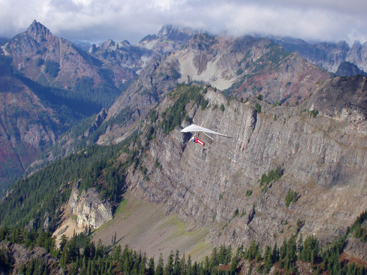
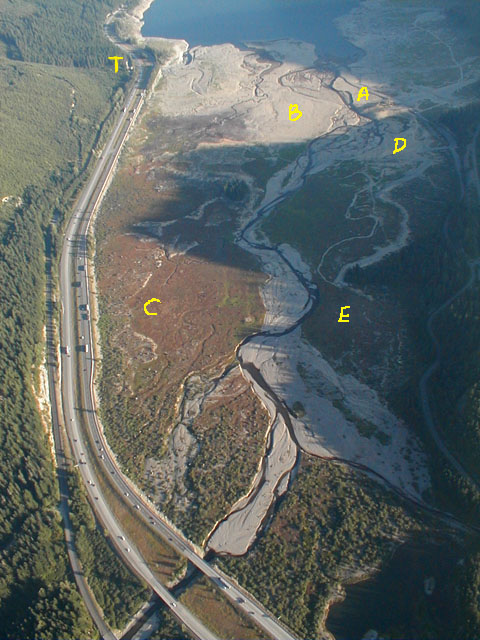

Rampart Ridge
Last updated 03/12/2024 (from the club's previous website)
This site is a historic, unmaintained, and unimproved alpine site. This guide is for reference purposes only.
Located on the E side of Snoqualmie Pass, Rampart Ridge offers spectacular views of the Cascades and the Alpine Lakes Wilderness. Both launch and landing require strong skills and high “bump tolerance” for mid-day flying if there's a significant lapse rate or wind, due to uneven launch topography and trees, along with potentially extreme LZ rotor and thermic turbulence. H3+ / P4 recommended.

Protocol
Land on dry lake bed.
Flying Season
Late Summer, Fall.
Access
Decaying abandoned logging road: dirt, rock, gravel, 4WD high clearance.
Site Details
| Launch Elevation | 4500 MSL |
|---|---|
| Launch Type | Steep gravel slope |
| Obstructions | None |
| HG Launch Faces | WNW – wind speed/direction W 0-10 mph, max gust differential 5 mph |
| PG Launch Faces | WSW (a launch farther up the road, typically used by paragliders) – wind speed/direction W 0-10 mph, max gust differential 5 mph |
| Soarable | Yes, round trip |
| LZ Elevation | 2500 MSL |
| LZ Type | Lake bed |
| LZ Obstructions | Rotor turbulence from Hyak |
| Notes | Lake Kacheelus level needs to be below 2468ft to expose the aircraft-carrier landing area, which usually happens by late July. |
Additional Notes: There is a military training route that runs up the valley, and it is not uncommon to see fast, low-flying jets come through the valley below you! These are scheduled training missions. If you're going to fly here, contact Whidbey Naval Air Operations at 1-800-360-3050 or 360-257-2877. Tell them you are a citizen pilot flying a HG/PG checking on scheduled flights on VR 1355 MTR.
Because this site sits at the top of a mountain pass, the winds can become very strong, very quickly. Rule of thumb: compare the barometric pressure of Seattle and Wenatchee. If it is less than 5 millibars difference (west to east), the winds may be light enough to allow safe flying.
Landing notes (Kevin Cosley)
The majority of the landings are good and fun. It's usually not bad, but we are landing in the middle of the mountains in wind after all. Expect turbulence the last few hundred feet.
- A – The standard LZ (“Carrier Deck”): Usually fine, but it's not uncommon to encounter big sink and rotor here. More people have been landing on the west side of the road here.
- B – “Gobi”: The smoothest air, and it's huge. A good option if worried about turbulence at the standard LZ. You'll wade through shin-deep water in the creek to get back to your car.
- C – Truck Stop LZ: A landing option for when the lake is up covering the Standard LZ. Air here can be extremely variable, especially mid-afternoon, and there are stumps around the edge.
- D – The Boat Ramp: Becomes dry before the Standard LZ. Big sink and rotor are pretty normal here.
- E – Pounder's Field: The first LZ to appear as the lake goes down in spring/summer. You'll need to hike your glider out through the trees to get to the road. Switchy winds and rotor.
- T: A reliable house thermal. When the ridge isn't working, one can frequently come here to get up and stay up.

Only launch within your rating and skill levels; when in doubt, don't set up or launch.
If you're in the air and the sky starts to look threatening, get out of the air immediately. Also be aware of nearby terrain and potential for rotor. (Yes, this is common-sense H1/P1 stuff, but it's here for a reason.)
All incidents should be documented via the current USHPA incident reporting protocols, with a courtesy copy to the site contact. Any incident involving non-pilot property damage, injuries, or assistance from non-pilots (EMS, police, public bystanders, etc.) must also be reported as soon as practical to the site contact.
In an emergency, call 9-1-1 first.